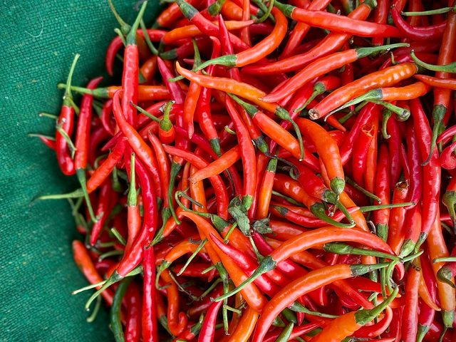
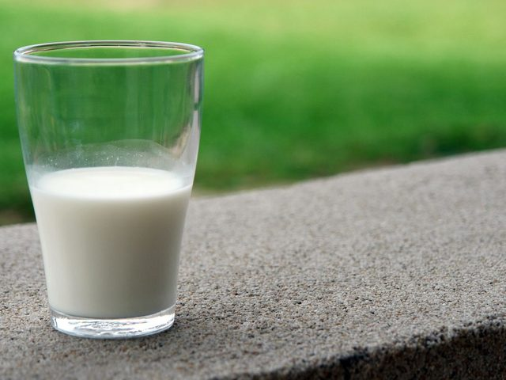
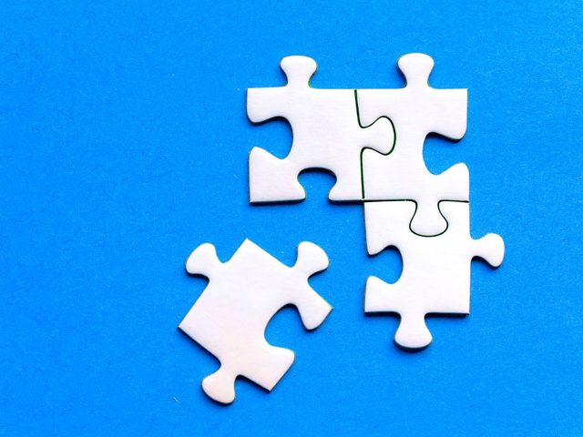
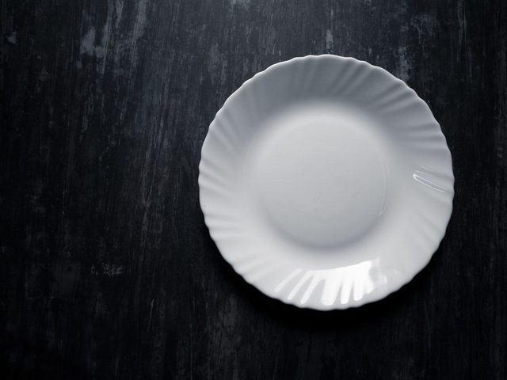
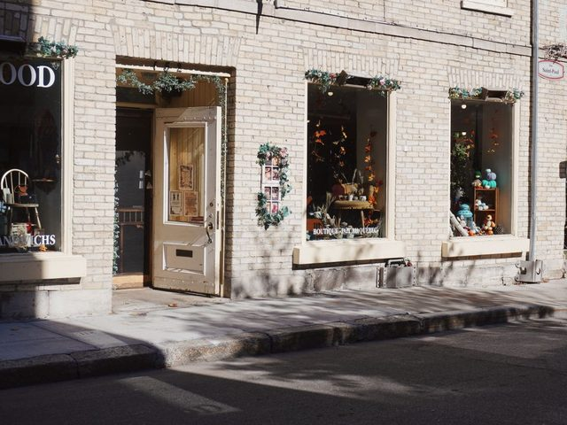
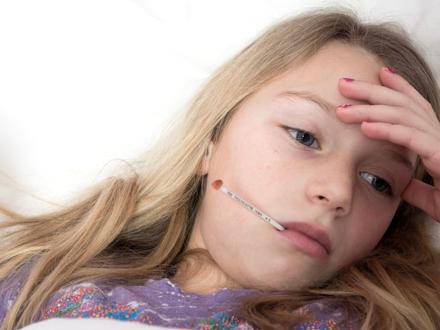
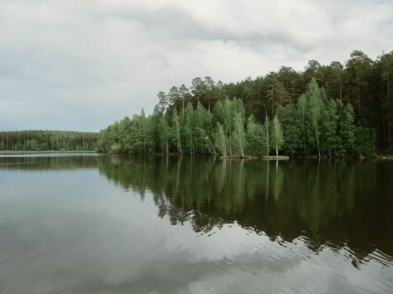

LALA WORD · UNIT 5
一字多義（五）
A Small Mask, A Big Change
18 個單字一字多義
本單元單字一覽
mask 是面具，也是口罩；chicken 是雞，也可以笑人「膽小鬼」。這個單元有 4 個主題單字、14 個更多單字，最後整理都是「很多」的 many／much／a lot of。
chickendarkbrightmaskglasshotkidlastmilkpartplateshopshowsickstillsweetthirstywater
每個字先聽 🔊，再一個意思一個意思看例句。
1. chicken 主題單字．3 個意思

chicken
複數 chickens
n.雞
Grandma keeps ten chickens on her farm.
奶奶的農場養了十隻雞。
n.雞肉
I'd like chicken rice, please.
我要一份雞肉飯。
n.膽小鬼
Come on, jump in! Don't be a chicken.
快跳下來！別當膽小鬼。
2. dark 主題單字．4 個意思
dark
dark - darker - darkest
adj.天黑的；昏暗的
It gets dark early in winter.
冬天天黑得早。
adj.深色的
He is wearing a dark blue jacket.
他穿著一件深藍色外套。
n.天黑
Come home before dark.
天黑前回家。
n.黑暗in the dark 在黑暗中；被蒙在鼓裡
My little sister is afraid of the dark.
我妹妹怕黑。
3. bright 主題單字．3 個意思

bright
bright - brighter - brightest
adj.明亮的；鮮豔的
The sun is very bright today.
今天陽光很亮。
adj.聰明的(as) bright as a button 非常聰明
Lily is a bright student.
Lily 是個聰明的學生。
adj.樂觀的；開心的look on the bright side 往好處想
Always look on the bright side.
凡事要往好處想。
4. mask 主題單字．3 個意思

mask
複數 masks
n.面具
The kids wore animal masks at the party.
孩子們在派對上戴動物面具。
n.口罩
Please wear a mask on the bus.
搭公車請戴口罩。
n.掩飾
His smile was a mask. He was really sad.
他的微笑只是掩飾，他其實很難過。
5. glass 更多單字．3 個意思

glass
複數 glasses
n.玻璃
The window is made of glass.
窗戶是玻璃做的。
n.玻璃杯a glass of 一杯
Can I have a glass of water?
可以給我一杯水嗎？
n.眼鏡（glasses）
I can't see well without my glasses.
沒戴眼鏡我看不清楚。
6. hot 更多單字．3 個意思

hot
hot - hotter - hottest
adj.熱的
It's so hot today. Let's go swimming.
今天好熱，我們去游泳吧。
adj.辣的
This curry is too hot for me.
這個咖哩對我來說太辣了。
adj.熱門的
This game is the hot new toy this year.
這個遊戲是今年最熱門的新玩具。
7. kid 更多單字．4 個意思

kid
kid - kidded - kidded - kidding
n.小孩
The kids are playing in the park.
孩子們在公園玩。
n.年輕人
He was just a kid when he started his company.
他開公司的時候還只是個年輕人。
v.開玩笑
I'm just kidding. Don't be angry.
我只是開玩笑，別生氣。
v.嘲笑；拿…開玩笑kid + 人 + about 拿…開某人玩笑
My brother always kids me about my short hair.
我哥哥老是拿我的短髮開玩笑。
8. last 更多單字．4 個意思

last
last - lasted - lasted - lasting
adj.上一個的last night / week / year 昨晚／上週／去年
I went to Kenting last summer.
我去年夏天去墾丁。
adj.最後的last name 姓
December is the last month of the year.
十二月是一年的最後一個月。
adj.最不可能的
He is the last person to tell a lie.
他是最不可能說謊的人。
v.持續；維持
The rain lasted for three days.
雨下了三天。
9. milk 更多單字．4 個意思

milk
milk - milked - milked - milking
n.牛奶；奶
I drink a glass of milk every morning.
我每天早上喝一杯牛奶。
n.（植物的）白色汁液soy milk 豆漿；coconut milk 椰奶
Soy milk is popular in Taiwan.
豆漿在臺灣很受歡迎。
v.擠奶
The farmer milks the cows every morning.
農夫每天早上擠牛奶。
v.榨取（利益）
Some shops milk tourists for money.
有些店家專門坑觀光客的錢。
10. part 更多單字．4 個意思

part
part - parted - parted - parting
n.部分in part 部分地
Part of the cake is gone.
蛋糕少了一部分。
n.零件
The car needs some new parts.
這輛車需要一些新零件。
n.角色
Tom played the part of the king in the play.
Tom 在戲裡演國王。
v.分開；離別
The two friends parted at the train station.
兩個朋友在火車站分別。
11. plate 更多單字．3 個意思

plate
plate - plated - plated - plating
n.盤子；一盤a plate of 一盤…
She ate a plate of fried noodles.
她吃了一盤炒麵。
n.板子；車牌license plate 車牌
Can you see the car's license plate?
你看得到那台車的車牌嗎？
v.裝盤
The chef plated the steak with some vegetables.
主廚把牛排和蔬菜一起裝盤。
12. shop 更多單字．3 個意思

shop
shop - shopped - shopped - shopping
v.購物；買東西shop for 購買；window-shopping 逛街只看不買
Mom shops for food every Saturday.
媽媽每週六去買菜。
n.商店
There is a coffee shop near my school.
我學校附近有一家咖啡店。
n.工作坊；修理廠
Dad took the car to the shop.
爸爸把車送去修車廠。
13. show 更多單字．5 個意思

show
show - showed - shown（showed） - showing
v.給…看；展示show + 人 + 物 = show + 物 + to + 人
Show me your new phone.
給我看你的新手機。
v.顯示；證明
The test shows that you studied hard.
這次考試證明你很用功。
v.出現（show up）show up 出現
He didn't show up for the party.
他沒有出現在派對上。
n.節目；表演
My favorite TV show starts at eight.
我最愛的電視節目八點開始。
n.展覽
We went to a car show last weekend.
我們上週末去看車展。
14. sick 更多單字．4 個意思

sick
sick - sicker - sickest
adj.生病的
I can't go to school. I'm sick.
我不能去上學，我生病了。
adj.想吐的；噁心的carsick 暈車；seasick 暈船；homesick 想家
I feel sick on long bus rides.
坐長途公車我會想吐。
n.病假on sick leave 請病假
Ms. Lin is on sick leave today.
林老師今天請病假。
n.病人（the sick）
Doctors and nurses take care of the sick.
醫生和護理師照顧病人。
15. still 更多單字．4 個意思

still
adv.仍然；還
Are you still hungry?
你還餓嗎？
adv.儘管如此
It rained hard. Still, we had fun.
雨下得很大，但我們還是玩得很開心。
adv.更加
The second test was still harder.
第二次考試更難。
adj.靜止的keep / stay still 保持不動
Sit still and listen.
坐好別動，注意聽。
16. sweet 更多單字．4 個意思

sweet
sweet - sweeter - sweetest
adj.甜的have a sweet tooth 愛吃甜食
This watermelon is very sweet.
這顆西瓜很甜。
adj.貼心的
It's sweet of you to help me.
你幫我真貼心。
adj.美好的
Winning the game felt so sweet.
贏得比賽的感覺真美好。
n.糖果
Don't eat too many sweets.
不要吃太多糖果。
17. thirsty 更多單字．2 個意思

thirsty
thirsty - thirstier - thirstiest
adj.口渴的
I'm thirsty. Can I have some water?
我口渴了，可以喝點水嗎？
adj.渴望的be thirsty for 渴望
The boy is thirsty for his parents' love.
那個男孩渴望父母的愛。
18. water 更多單字．5 個意思

water
water - watered - watered - watering
n.水
Drink more water on hot days.
天氣熱要多喝水。
n.水域（waters）
Many fish live in these waters.
很多魚住在這片水域。
v.澆水
Can you water the plants for me?
你可以幫我澆花嗎？
v.流口水
The smell of the food made my mouth water.
食物的香味讓我流口水。
v.流眼淚
Cutting onions makes my eyes water.
切洋蔥讓我流眼淚。
易混淆字：都是「很多」
| 單字 | 用法 | 例句 |
|---|---|---|
| many | 接可數名詞（複數）；比較級 more、最高級 most | How many apples do you want? |
| much | 接不可數名詞；也可以修飾動詞、比較級 | How much milk is there?／It's much hotter today. |
| a lot of | 可數、不可數都可以接（＝ lots of） | I have a lot of homework. |
| a lot | 副詞，放在動詞後面 | She talks a lot. |
否定句、疑問句常用 many／much；肯定句口語常用 a lot of。
一字多義：最常見 vs. 容易忽略的意思
| 單字 | 最常見的意思 | 容易忽略的意思 |
|---|---|---|
| chicken | 雞；雞肉 | 膽小鬼 |
| mask | 面具；口罩 | 掩飾 |
| bright | 明亮的 | 聰明的 |
| glass | 玻璃；玻璃杯 | glasses 眼鏡 |
| hot | 熱的 | 辣的；熱門的 |
| kid | 小孩 | 開玩笑 |
| last | 最後的 | 持續 |
| part | 部分 | 角色；分開 |
| still | 仍然 | 靜止的 |
| water | 水 | 澆水；流口水 |
常用片語
| 片語 | 意思 | 例句 |
|---|---|---|
| in the dark | 在黑暗中；被蒙在鼓裡 | Nobody told me. I was in the dark. |
| look on the bright side | 往好處想 | Look on the bright side. You learned a lot. |
| just kidding | 開玩笑的 | I'm just kidding! |
| show up | 出現 | She showed up at ten. |
| have a sweet tooth | 愛吃甜食 | My dad has a sweet tooth. |
| stay still | 保持不動 | Stay still for the photo. |
快問快答：這句的 粗體字 是什麼意思？
1Come on, jump in! Don't be a chicken.膽小鬼
2My little sister is afraid of the dark.黑暗
3Always look on the bright side.樂觀的；開心的
4His smile was a mask. He was really sad.掩飾
5I can't see well without my glasses.眼鏡（glasses）
6This game is the hot new toy this year.熱門的
7My brother always kids me about my short hair.嘲笑；拿…開玩笑
8The rain lasted for three days.持續；維持
快問快答：這句的 粗體字 是什麼意思？
1Some shops milk tourists for money.榨取（利益）
2The two friends parted at the train station.分開；離別
3The chef plated the steak with some vegetables.裝盤
4Dad took the car to the shop.工作坊；修理廠
5We went to a car show last weekend.展覽
6Doctors and nurses take care of the sick.病人（the sick）
7Sit still and listen.靜止的
8Don't eat too many sweets.糖果
學完了！接下來
複習方法
review
- 回到「📗 單字卡」，按「遮中文」，看例句說出每個意思
- 特別記「容易忽略的意思」（例如 pen 圍欄、ball 舞會）
- 每個例句跟著 🔊 唸一次
準備好了
- 按右上角「📝 前往測驗」
- 測驗錯的題目要訂正到全對
- 訂正完成補送 1 點